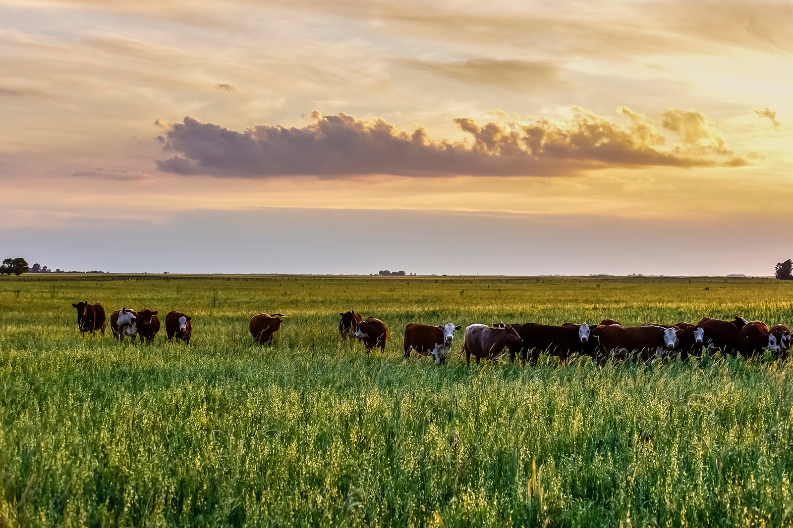

O Pampa, localizado principalmente no sul do Brasil, é um bioma único, caracterizado por vastas planícies e campos. Embora seja conhecido por sua aparência de campos abertos, o Pampa possui uma biodiversidade surpreendente. Descubra as maravilhas da flora que se adapta perfeitamente às condições desse bioma.
As gramíneas são a vegetação predominante no Pampa, criando vastos campos que se estendem até onde a vista alcança. Espécies como a grama-mato-grosso (Axonopus compressus) e a capim-fino (Andropogon lateralis) são exemplos de plantas que dominam a paisagem, criando a característica de "campos abertos".
Embora o Pampa seja predominantemente composto por campos, pequenas árvores e arbustos também compõem a paisagem, especialmente em áreas de solo mais fértil ou em bordas de rios. Entre as espécies mais comuns estão o espinilho (Vachellia caven) e o butiá (Butia capitata), que crescem de forma espaçada.
O Pampa também abriga uma variedade de plantas medicinais utilizadas pelas comunidades rurais. A marcela (Achyrocline satureioides) é conhecida por suas propriedades calmantes, e o carqueja (Baccharis trimera) é utilizado para problemas digestivos e circulatórios.
Durante a primavera, o Pampa se enche de flores coloridas, como a flor-de-maio (Schizachyrium tenerum) e o cravo-do-campo (Celosia argentea), que proporcionam cor e vida à vasta planície verde. Essas flores não apenas embelezam o bioma, mas também desempenham um papel vital na polinização.